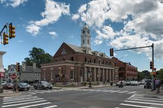
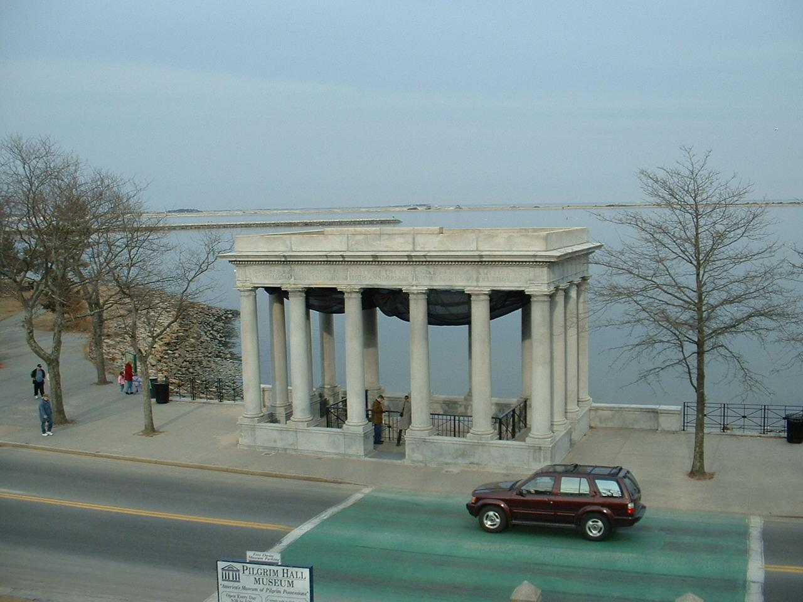
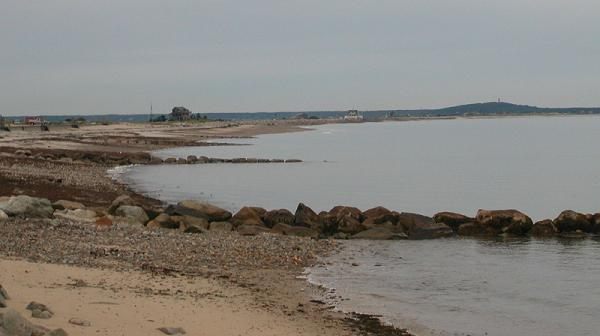

The Home of the Pilgrims!

Plymouth!The town that everyone learned about in school as the landing spot of the pilgrims. But to me, this is home. I have lived in Plymouth my entire life as I am surrounded by all of my family here. you may think "Oh there must be so much to do there!" but when you live there, it gets boring. Dont get me wrong the town is beautiful, it is just aimed for tourists and you can only be one for so long.

My favorite place to go is to the beach! Plymouth Long Beach is a 3.3 mile beautiful spot to just drive out to the point and relax on a nice hot summers day. I have been going to this beach my entire life and it wil forever be my favorite.

My favorite store that can be found in downtown Plymouth is Healthy Vibes! It is a locally owned, healthy shake place. When I am home, I go there everyday and they greet me with nothing but happiness and smiles. Whenever I feel down, going there and getting my favorite peanutbutter oreo shake turns my day around!